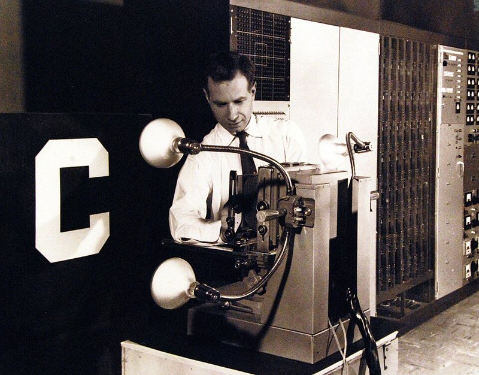

Course logistics
Announcements: Slack

Materials
mim-ml-teaching.github.io/public-dnnGrading
The grading rules will be announced in a week.Entry quiz (NumPy and other prerequisites)
- the questions are public (on the materials page): use them to check yourself
- quiz at the 5th labs (Oct 30 to Nov 6): a random subset of the same questions, no notes
- 10 questions, 10 points out of about 100 to 120 in the course (roughly half a grade)
ML Bootcamp (optional)
- Mon & Wed, 18:15, rooms 3043/3044, first four weeks; come to any subset
- refresh the prerequisites: NumPy, Pandas, gradients, linear regression
- or just come with questions, e.g. about previous labs
In USOS the bootcamp appears as groups 10 and 11; they are unrelated to the Tuesday 12:15 and 14:15 lab groups.
Today in one sentence
- a neural network is a highly customizable function
- with a huge number of parameters
- gradient descent iteratively adjusts these parameters to reduce the training loss
- the result generalizes far better than it has any right to
1 · the function
what a network computes, and how flexible it is
2 · fitting it
loss, gradient descent, SGD, gradients by hand
3 · generalization
why does it work on data it has never seen?
What is inside these boxes?
Each box is a function
$$f : \mathcal{X} \to \mathcal{Y}$$
- we cannot write $f$ down…
- …but we can collect examples $(x_i, y_i)$
- Choose a neural-network architecture that composes multiple learned layers with nonlinear activations.
- Fit its parameters to data by minimizing a training loss, typically using gradient-based optimization.
Not a new idea
Linear regression is the same recipe with a tiny family: $$\begin{aligned}\hat{y} = f_\theta(\mathbf{x}) &= \theta_0 + \sum_{j=1}^{d} \theta_j x_j \\ &= \theta_0 + \theta_1 x_1 + \cdots + \theta_d x_d.\end{aligned}$$
What changed: the family is enormous, and we still manage to find good $\theta$.
Where it began: the perceptron (1957)
Frank Rosenblatt's model of a neuron:
$$y = \big[\, w_1 x_1 + \dots + w_k x_k + b \ge 0 \,\big] \in \{0, 1\}$$
- a weighted vote of the inputs, then a yes/no decision
- the weights $w_i$ and bias $b$ are knobs — already a "function with knobs"
- a linear model followed by a threshold: the same formula as today's neuron, only the step function was later replaced
The Mark I Perceptron (Cornell, 1958–60)
Training, by hand:
- put a printed letter in front of the camera
- if the machine answers wrongly, the trainer flips a switch to force the correct answer
- electric motors turn the potentiometers that store the weights
Result: one typeface learned without error; 85% correct once a second typeface was added.

What one perceptron can — and cannot — do
One perceptron draws one line: XOR is impossible (Minsky & Papert, Perceptrons, 1969). Two layers solve it — next slide: in fact, any Boolean function.
Two layers compute any Boolean function
Example: $f(x_1, x_2, x_3) = 1$ iff exactly one input is 1.
From perceptrons to the multi-layer perceptron
Two layers of perceptrons can compute any Boolean function (previous slide). But how do we train the hidden layer?
The Mark I left its hidden layer random: nobody knew how to train it.
Nudge any weight slightly: the step output does not change at all. Every partial derivative is 0 — gradient descent has nothing to follow.
Fix (1980s, backpropagation): replace the step by a smooth or piecewise-linear activation. Same weighted sum, same layers — now trainable by gradient descent.
The name stayed: a multi-layer perceptron (MLP) today means layers of such neurons — not of 1957 perceptrons.
derivative 0 everywhere
(undefined at 0)
smooth: nudges have an effect
today's default
Why now?
Data
MNIST (1998): 60,000 images → ImageNet (2009): 1.2 million → today's language models: ~15 trillion tokens of text.Compute
AlexNet: 2 gaming GPUs for about a week. Since 2010, the compute used to train frontier models has grown roughly 4–5× per year.Algorithms & software
ReLU, better initialization, normalization, residual connections, Adam, attention — and frameworks that compute gradients automatically (next lecture).Neuron, layer, network
neuron
weighted sum + nonlinearity $$\begin{gathered}h = \mathrm{ReLU}(\mathbf{w}^\top \mathbf{x} + b)\\ f : \mathbb{R}^2 \to \mathbb{R}\end{gathered}$$layer
$m$ neurons side by side $$\begin{gathered}\mathbf{h} = \mathrm{ReLU}(W \mathbf{x} + \mathbf{b})\\ f : \mathbb{R}^2 \to \mathbb{R}^m\end{gathered}$$network
layers composed $$\begin{aligned}\mathbf{h}_1 &= \mathrm{ReLU}(W_1 \mathbf{x} + \mathbf{b}_1)\\ \mathbf{h}_2 &= \mathrm{ReLU}(W_2 \mathbf{h}_1 + \mathbf{b}_2)\\ f_\theta(\mathbf{x}) &= W_3 \mathbf{h}_2 + \mathbf{b}_3\end{aligned}$$One neuron, one layer
Here the neuron is a function $f : \mathbb{R}^2 \to \mathbb{R}$, and so is the layer once its $m$ outputs are summed with weights. Input: a point $\mathbf{x} = (x_1, x_2)$ on the floor plane. Output: one number, drawn as the height of the surface above that point.
One hidden layer = a piecewise-linear function
$$f(x) = c + \sum_{k=1}^{n} a_k\, \mathrm{ReLU}(w_k x + b_k)$$
Unit $k$ is off ($=0$) on one side of its joint $x = -b_k / w_k$ and linear on the other.
Between two neighbouring joints every unit is either off or linear, so $f$ is a sum of linear functions — linear.
At joint $k$ the slope jumps by $a_k w_k$. So $n$ units → at most $n$ joints → at most $n+1$ linear pieces. More units → more joints → any shape.
Depth: folding space
Each layer folds $[0,1]$ onto itself and so doubles the number of joints: $k$ layers of 2 units give $2^k$ linear pieces. A single hidden layer needs a unit for every joint — about $2^k$ units for the same function.
Universal approximation
Theorem (Cybenko 1989; Hornik 1991). A network with one hidden layer can approximate any continuous function on a compact set arbitrarily well — given enough hidden units.
Reassuring, but it says much less than it seems:
| question | does the theorem answer it? |
|---|---|
| can some $\theta$ represent the function? | yes |
| how many units are needed? | no — possibly astronomically many (depth helps: previous slide) |
| can we find that $\theta$ from data? | no |
| will it generalize to new inputs? | no |
Polynomials and lookup tables are universal approximators too. Expressiveness is not the explanation.
How many knobs?
Each parameter is one real number the training procedure has to set. The largest models are mixtures of experts: only a fraction of the parameters is used for each token. Frontier closed models (GPT, Claude, Gemini) do not publish their sizes.
Learning = minimizing a loss
Training set $\{(\mathbf{x}_i, y_i)\}_{i=1}^n$, a loss per example $\ell$:
$$L(\theta) = \frac{1}{n} \sum_{i=1}^n \ell\big(f_\theta(\mathbf{x}_i),\, y_i\big)$$
- regression: $\ell = (\hat y - y)^2$
- classification: $\ell = -\log p_\theta(y \mid \mathbf{x})$ (cross-entropy)
A landscape in millions of dimensions
$L$ is a function of all parameters. Training = walking downhill on it.
It is not convex: no guarantee of finding the global minimum. In practice that hardly matters — one of today's surprises.
Gradient descent vs stochastic gradient descent
GD: $\theta \leftarrow \theta - \eta\, \nabla L(\theta)$ — uses all $n$ examples per step.
SGD: $\theta \leftarrow \theta - \eta\, \nabla \tfrac{1}{|B|}\sum_{i \in B} \ell_i(\theta)$ — a random minibatch $B$: noisy, but $\tfrac{n}{|B|}$ times cheaper.
Watch a network learn
The same loop trains everything
initialize θ randomly
repeat:
B ← random minibatch
L ← loss of f_θ on B
g ← ∇_θ L # how?
θ ← θ − η · gFrom the spiral above to trillion-parameter language models: the same loop.
Everything hinges on one line: computing the gradient of the loss with respect to every parameter.
Let us do it once by hand.
Which way should each knob turn?
From nudges to derivatives
The ratio we measured, in the limit, is the partial derivative:
$$\frac{\partial L}{\partial w} = \lim_{\varepsilon \to 0} \frac{L(\dots, w + \varepsilon, \dots) - L(\dots, w, \dots)}{\varepsilon}$$
change one parameter, keep all others fixed
The gradient collects all of them:
$$\nabla_\theta L = \Big(\frac{\partial L}{\partial \theta_1}, \dots, \frac{\partial L}{\partial \theta_P}\Big)$$
and for a small change $\Delta$ of all parameters at once: $\;L(\theta + \Delta) \approx L(\theta) + \nabla_\theta L^\top \Delta$
What it tells us
- sign: which way to turn each knob to reduce the loss
- magnitude: how sensitive the loss is to that knob (0: no effect right now)
- $-\nabla_\theta L$ is the direction of steepest descent → the gradient step $\theta \leftarrow \theta - \eta \nabla_\theta L$
Why not just nudge?
Nudging = one extra forward pass per parameter: 669,706 forward passes for one gradient of a small MNIST classifier. The chain rule gets all of them from one forward and one backward pass.
Computing the gradient: the chain rule
This does not scale by hand
- our tiny network: 9 parameters, a page of algebra
- a small MNIST digit classifier: 669,706 parameters
- Kimi K3 (2026): 2,800,000,000,000
But the computation was mechanical: local derivatives, multiplied along the paths from the loss back to each parameter, reusing shared intermediate results.
The classical worry
A network with one hidden layer of $n$ units can memorize any $n$ labelled examples: give each training point its own unit.
Classical statistics: a model that can fit anything learns nothing. More parameters than data → overfitting.
Our MNIST network
- 669,706 parameters
- 5,000 training images
- ≈ 134 parameters per example
It should overfit badly. Let us train it.
Experiment: true labels vs random labels
Same network, same optimizer, same images. With random labels it still reaches 100% training accuracy — and, of course, chance-level test accuracy.
What does this tell us?
- The network can memorize arbitrary labels — classical capacity arguments say it is "too big".
- Yet on real data, SGD finds a solution that generalizes: among the many functions that fit the training set, it picks a good one.
- So generalization depends on the data, the architecture and the training procedure — not just on the number of parameters.
Experiment: more parameters, less overfitting?
Double descent: classical U-curve on the left; a peak where the model can just barely fit the data; then test error falls again — far below the classical optimum.
experiments/double_descent.py → assets/lecture01/data/double_descent.json; reproduce with python experiments/double_descent.py (a few minutes on a laptop CPU).
Deep double descent (Nakkiran et al., 2019) optional
Redrawn from Fig. 1 (left) of Nakkiran, Kaplun, Bansal, Yang, Barak, Sutskever, Deep Double Descent: Where Bigger Models and More Data Hurt, ICLR 2020 (arXiv:1912.02292); values digitized from the published figure.
Setup
- ResNet18 with width $k = 1 \dots 64$ ($k = 64$: the standard ResNet18)
- CIFAR-10 with 15% label noise, Adam, 4,000 epochs — no early stopping
Findings
- Model-wise: test error falls, rises around the point where the network can just fit the training set, then falls again — the widest network is best.
- Epoch-wise: for a fixed large model, test error over training time shows the same dip–rise–dip.
- Sample-wise: near the peak, more training data can hurt (4.5× more samples gave worse test error).
- Seen for ResNets, CNNs and transformers; strongest with label noise, small without it.
A priori, this should not work
- the loss landscape is non-convex — yet SGD finds near-zero training loss, almost from any initialization
- there are many zero-loss solutions, including ones that memorize noise — yet SGD lands on one that generalizes
- more parameters often help generalization, against the classical bias–variance intuition
What we understand (partly)
- implicit bias of gradient descent: among all fits it prefers "simple" ones (e.g. minimum norm)
- flat minima and the noise of SGD
- architecture encodes assumptions about the data (convolutions, attention — later lectures)
- scale: bigger models + more data keep improving
No complete theory yet — deep learning is still largely an empirical science.
The rest of the course
SGD in its plain form is fragile. Most of the course is the engineering that makes it work reliably — and the architectures that make it work on real data.
| next lecture | automatic differentiation: computing $\nabla_\theta L$ for any network (frameworks, PyTorch) |
| optimization | momentum, Adam, learning-rate schedules |
| regularization | weight decay, augmentation, dropout |
| trainability | initialization, normalization, residual connections |
| architectures | convolutional networks, attention and transformers, generative models |
Summary
- Tasks we cannot program are still functions; we pick $f_\theta$ from a huge family and let data choose $\theta$.
- A ReLU network is a piecewise-linear function; width adds pieces, depth multiplies them; universal approximation says representation is not the bottleneck.
- Training = minimizing a loss with SGD; it needs the gradient, computed by the chain rule (next lecture: automatically).
- Networks can memorize random labels, yet generalize on real data; more parameters can reduce test error. Why — only partly understood.